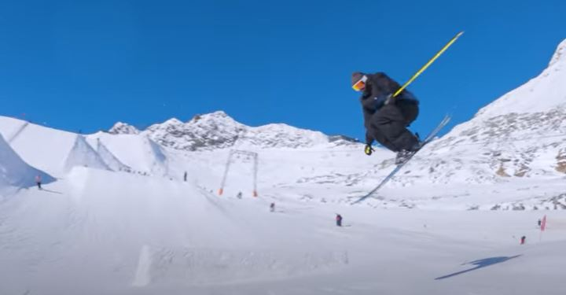
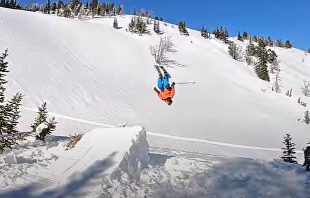

How to do tricks:
But before going over tricks you should be able to ski pretty well. If you cannot you should watch this video:
Tail grab:
- Find a small jump and approach the jump in a stable speed that you are comfortable with.
- As you reach the lip of the jump pop off of the jump (extend your legs to get more air).
- Once in the air pull your knees up into your chest to make your skis easier to grab.
- Reach down with your hand and grab the tail of your ski, hold it until you are about to land.
- Let go of the skis and extend your legs into a stable position ready to land.

360:
- Pick a medium sized jump and approach it with speed and your knees slightly bent facing forward.
- As you reach the lip of the jump rotate your upper body in the direction you are spinning (Leading with your shoulders).
- Right before takeoff pop and swing your arms in the direction you are spinning to help gain momentum
- tuck in your legs a little to help maintain balance.
- As you are coming around spot your landing and maintain balance in the air.
- As you finsih the 360 prepare to land and extend your legs.

Backflip:
- Find a large jump with a steep takeoff for more height. Go at a controlled speed.
- As you approach the jump stay confident and slightly bend your knees.
- As you reach the lip pop hard and throw your head and shoulders back initiating the flip.
- Bring your knees into your chest and tuck to rotate faster, as you come around spot your landing.
- Extend your legs to prepare for landing and ski away in control.

Grind a rail:
- Start with a low, wide, and small rail.
- Gain a little speed and keep your focus on entering the rail.
- As you reach the lip slightly pop and try to land onthe rail with both skis parallel and centered over it.
- Keep your weight centered and keep your knees bended to help balance on the rail.
- As you rach the end slightly pop off it and rotate slightly back to a normal position skis parallel to the slope.